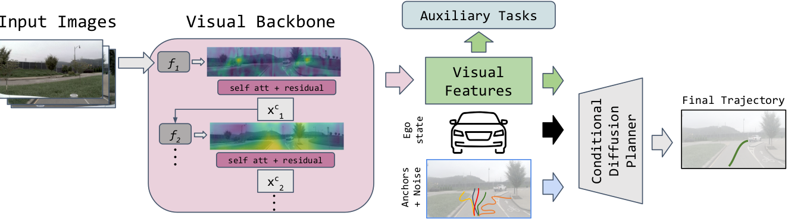
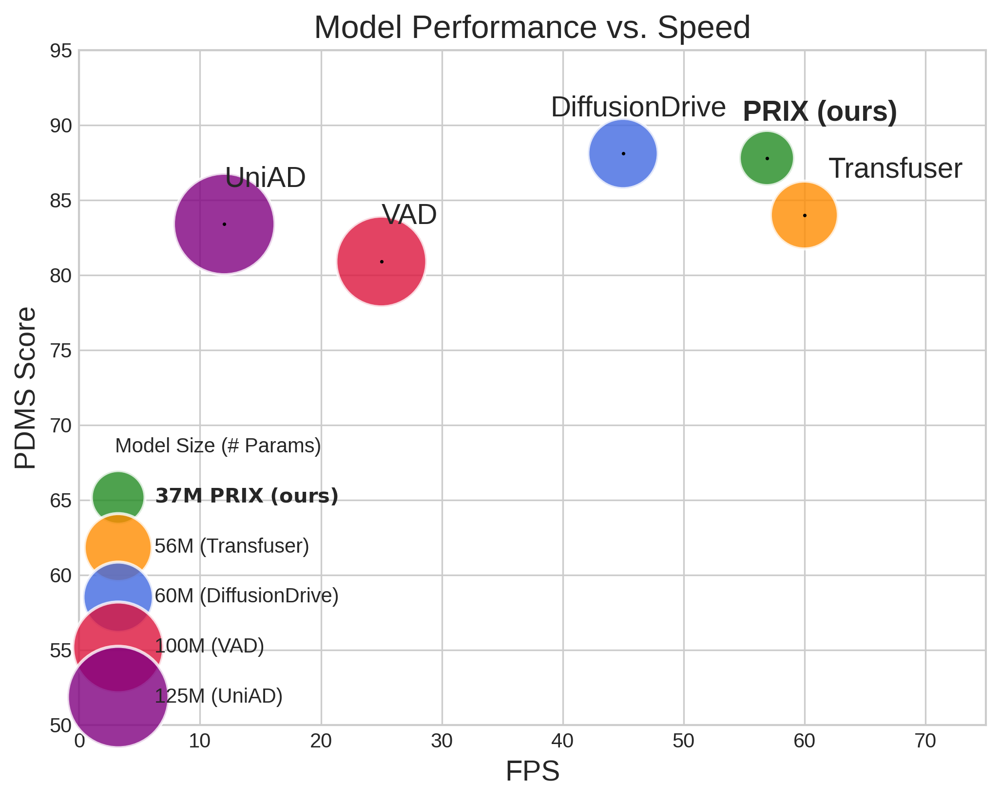

An efficient, camera-only, end-to-end autonomous driving model that achieves state-of-the-art performance without LiDAR or explicit BEV representations.
While end-to-end autonomous driving models show promising results, their practical deployment is often hindered by large model sizes, a reliance on expensive LiDAR sensors, and computationally intensive BEV feature representations. This limits their scalability, especially for mass-market vehicles equipped only with cameras. To address these challenges, we propose PRIX (Plan from Raw Pixels). Our novel and efficient end-to-end driving architecture operates using only camera data, without explicit BEV representation and forgoing the need for LiDAR. PRIX leverages a visual feature extractor coupled with a generative planning head to predict safe trajectories from raw pixel inputs directly. A core component of our architecture is the Context-aware Recalibration Transformer (CaRT), a novel module designed to effectively enhance multi-level visual features for more robust planning. We demonstrate through comprehensive experiments that PRIX achieves state-of-the-art performance on the NavSim and nuScenes benchmarks, matching the capabilities of larger, multimodal diffusion planners while being significantly more efficient in terms of inference speed and model size, making it a practical solution for real-world deployment.
High Efficiency
Introduced PRIX, a novel camera-only, end-to-end planner that is significantly more efficient than multimodal and previous camera-only approaches in terms of inference speed and model size.
CaRT Module
Proposed the Context-aware Recalibration Transformer (CaRT), a new module designed to effectively enhance multi-level visual features for more robust planning.
Comprehensive Validation
Provided a comprehensive ablation study that validates our architectural choices and offers insights into optimizing the trade-off between performance, speed, and model size.
State-of-the-Art Performance
Achieved SOTA performance on NavSim and nuScenes datasets, outperforming larger, multimodal planners while being much smaller and faster.
PRIX's architecture processes multi-camera images through a visual backbone featuring our novel CaRT module. These enhanced visual features, combined with the vehicle's state and noisy anchors, are fed into a conditional diffusion planner to generate the final, safe trajectory.
Performance vs. Speed
PRIX outperforms or matches multimodal methods like DiffusionDrive while being significantly smaller and faster, operating at a highly competitive framerate.
Key Benchmarks
NavSim-v1
87.8 PDMS
Top-performing model, surpassing both camera-only and multimodal competitors.
NavSim-v2
84.2 EPDMS
Achieved the best overall score, solidifying its position as the leading model.
nuScenes
0.57m Avg. L2 Error
Outperforms all existing camera-based baselines with the lowest error and collision rate.
Our model correctly handles complex scenarios like busy intersections and can even generate safer trajectories than the ground truth by maintaining a larger safety distance.
Sharp Left Turn
Improved Safety Margin
The model generates a trajectory that is safer than the ground truth by keeping a larger distance from other vehicles.
We introduced PRIX, an efficient and fast camera-only driving model that outperforms other vision-based methods and rivals the performance of state-of-the-art multimodal systems. While acknowledging LiDAR's importance for robustness, we prove that high performance is achievable with vision alone. PRIX demonstrates that relying directly on rich camera features for planning is a viable alternative to BEV representation and multimodal approaches, establishing a new benchmark for efficient, vision-based autonomous driving.